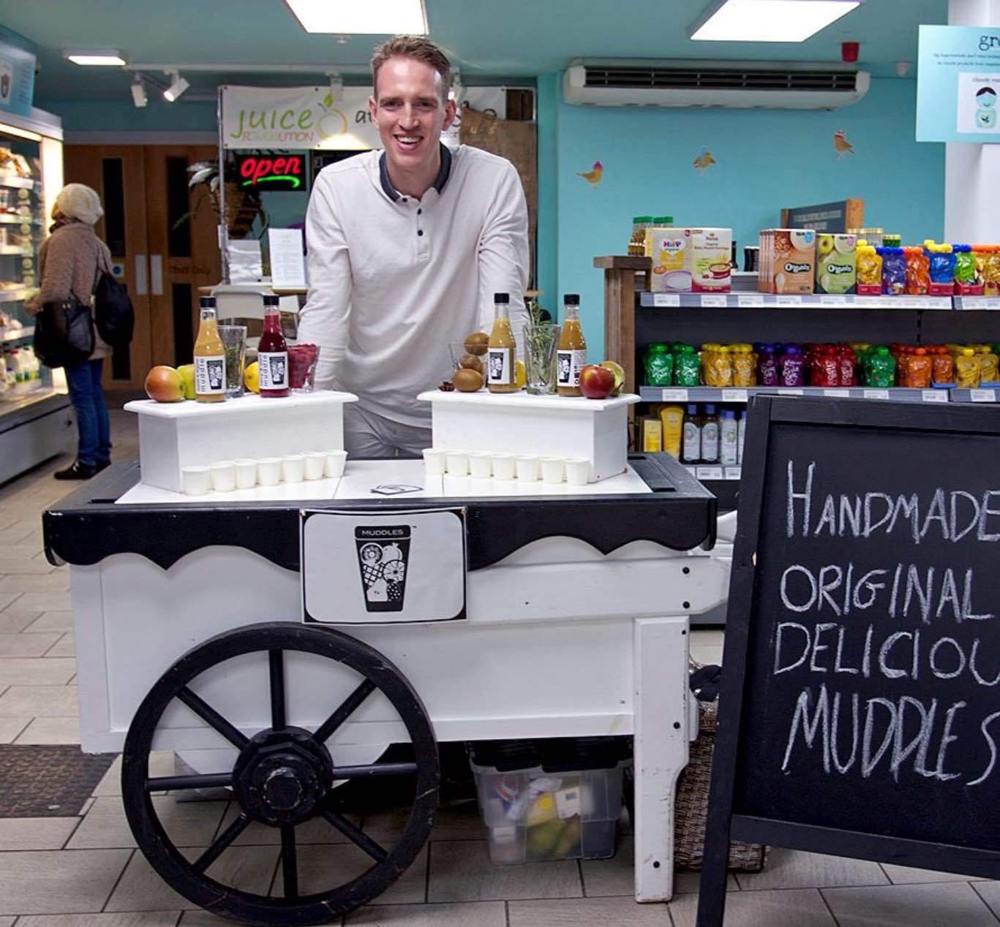

A mix of sweet and crisp red apples for a lasting, sweet flavour.
GREEN APPLE & GINGER
A light, sweet apple flavour with a zesty ginger mouthfeel.
SQUEEZED ORANGE
The super juicy oranges are squeezed to leave a full, fresh texture.
what's a muddle?
Hello! I’m Julian, the founder of Muddles Beverages ltd. My mission is to get children and grown-ups in the UK drinking less natural fruit sugar. So how the heck am I going to do that?
Well, my background is cocktail bartending. I’ve worked in cocktail bars across the world after being trained by legendary mixologist dre masso (@dremasso), who taught me about the craft of the cocktail from muddling fresh ingredients to pairing intricate flavour profiles and presenting a drink with a little flourish.
Fast forward a few years, however, I'm in Ho Chi Minh City, Vietnam, with a single mission: drive to Hanoi on a motorbike. What I found, aside from a bike with a leaking fuel dump and no third gear, were juice carts on more or less every street corner, all with a fantastic selection of fresh, tropical ingredients offering a whole spectrum of delicious flavour profiles. I managed the 3,000km ride in 22 days with one pair of haggard boots, which had survived 3 months working on an Australian banana farm, and a new plan: build a juice cart back home.

And I did it! I created a British version of the Vietnamese juice cart and used cocktail methodology to sell muddles at street markets and later to cafes, delis & grocers across London and Brighton.
But here comes the crunch in all this. Fruit & veg juices, smoothies and some coconut waters are loaded with fruit sugar, which make our bellies bigger twice as fast as the regular sugar as well as making our teeth hurt. I'm basically an overweight, toothless slob after my escapades in Southeast Asia (joke). But the stark reality is that 1/4 of adults, 1/5 of children and 1/10 infants in the UK are obese and that sugary drinks are the #1 cause.
That's exactly why a muddle offers a light, hydrating and naturally sweet drink with one of your five a day but, crucially, up to 50% less sugar than other pressed juices.